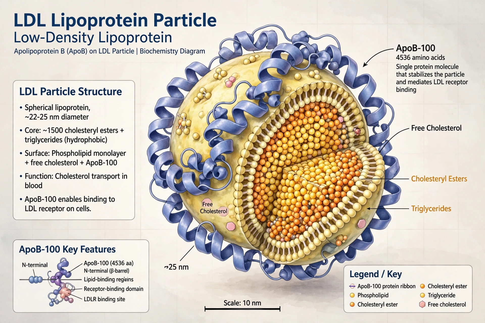

| Apolipoprotein B | |
|---|---|
 | |
| Gene | APOB (chromosome 2) |
| Forms | ApoB-100 (liver), ApoB-48 (intestine) |
| Found in | Chylomicrons, VLDL, IDL, LDL, Lp(a) |
Apolipoprotein B (ApoB) is the primary apolipoprotein of chylomicrons, VLDL, IDL, and LDL lipoproteins. Each atherogenic particle contains exactly one ApoB molecule, so plasma ApoB concentration directly reflects the number of atherogenic particles.
ApoB-100, synthesised in the liver, is one of the largest known proteins and acts as the ligand for the LDL receptor. ApoB-48, produced in the intestine by RNA editing of the same APOB transcript, forms chylomicrons and lacks the receptor-binding domain. ApoB is essential for assembling and secreting triglyceride-rich lipoproteins; lipoprotein lipase then processes them.
Elevated ApoB is a strong predictor of coronary artery disease, in many studies outperforming LDL cholesterol, especially when LDL-C is estimated by the Friedewald equation. Mutations cause familial defective ApoB and, when secretion fails, hypobetalipoproteinemia and abetalipoproteinemia.